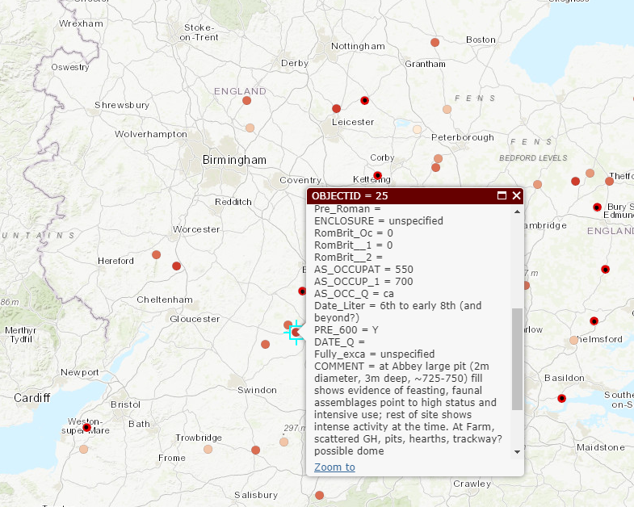

02: Anatomy of DH Projects
Today
- How do we Think about Technology?
- Very Basic Design Parameters
- Data and Data Models
- Assignment 1
Why “Anatomy of DH”?
- Design & evaluation of DH projects specifically
- Design & evaluation of projects (digital and otherwise) more generally
- Understanding of knowledge production in digital environments
DH pipelines
Tools & Technologies

Technology in DH
- New or existing? Software ecology?
- Open-source?
- GNU General Public License (GPL): source code for an application is freely available for study & modification– “as long as further developments and applications are put under the same licence
- Widely adopted? By your colleagues/ collaborators?
- User base: humanities? Industry? Institutions?
- Prerequisites:
- Data formats
- Tech stack (other software)
- Server space
- Training
Choosing a Tool
Affordances
Users, Readers, Communities
Technology-in-practice (Wanda Orlikowski)
The notion of “technology-in-practice“ suggests that the technology is not just the machinery, digital or analog, but on the one hand the organizational or institutional culture around it, and on the other hand, the needs and practices of its user community. Organizational culture and user community create a “behavioural and interpretive template” for the use of a technology.
Technology-in-practice: not only the technology itself, but “the ways it is extended, adapted, used, and misused by a specific user community—whether by ignoring an entire set of functions, or by extending its functionality through plugins or customizations, or by using it for purposes never foreseen by its designers. More briefly, technology-in-practice is “what people actually do with the technological artifact in their recurrent, situated practices.“
Technology-in-practice (DH)
DH: technology-in-practice is software and data as used by scholarly communities of practice, within institutional and disciplinary concerns and constraints, in conversation with audiences.
Technology-in-practice
Users and Intended Audiences
[E]ven doorknobs have politics in that they may be round, requiring a human hand to turn them, or shaped as levers, such that a person with a prosthetic limb or an armload of groceries with one free elbow can still successfully use them. This is more than simply a matter of utility. Both designs are political in that they presume and construct different kinds of worlds, with the round doorknob presuming a world in which everyone’s bodies are the same, and in which hands with opposable thumbs and sufficient grip strength are always available
What groups of users/readers are invited in? What groups of users/readers are shut out?
Consider:
- expertise & interest; scholars & laypersons
- use of e.g. assistive technologies like screen readers, speech recognition, close captioning, etc.
- level of technical training (or lack of it)
- limited access to (powerful) computers
- limited internet bandwidth
- Tradeoffs & compromises
User Experience, Interfaces, & Display
- UX (user experience) & usability testing
- User stories: descriptions, from a user’s perspective, of a tool: who they are, what they want the tool to do, in what order…
Data
Uses of Humanities Data

Classifying Hum Data


But then, Thinking Hard about Data
Humanities Data: Posner
It would be possible to enumerate all of the filmic conventions that recall the conventions of melodrama. Is there a villain? Is there a heroine? Are good and evil depicted in stark, black-and-white terms? You could even build a dataset like this and use it to show how film changed over time.
| Title | Year | Virtuous Heroine | Cruel Villain | Terrible evil | Heroine in peril | Broad gestures |
| The Lonedale Operator | 1911 | x | x | x | x | x |
| Birth of a Nation | 1915 | x | x | x | x | x |
| Get Rick Quick | 1912 | x | x |
But, seriously, who cares? There’s just such a drastic difference between the richness of the actual film and the data we’re able to capture about it.
((Posner, n.d.))
Data Universes

BrokenSphere, https://commons.wikimedia.org/w/index.php?curid=3773186

Data Models
- Data model: abstract representation of things or processes
- Data model: choice of virtual entities, relationships, properties/aspects → “toy universe“
- Data model: top row of your spreadsheet
Metadata
@@html</div>@@
Each record of an archive is described by metadata: structured data about data. For example, think about your library’s online catalogue: it contains the records of books, with fields like Author, Title, Publisher, Editor, Date. If you use standard metadata schemas, like Dublin Core, MARC, or MODS, your data will be discoverable and interoperable with aggregators and library catalogues.
Oops! Custom Metadata
 (Custom metadata schema: Anglo-Saxon Rural Settlements: Eynsham, from (McCormick et al., n.d.))
Metadata Standards
 ((Munroe, n.d.))
((Munroe, n.d.))
Vocabulary and Ontology
- Controlled vocabulary: set of permitted literal values to describea given entity (e.g. chairs: desk chairs, rolling chairs, step stools, kitchen table chairs); may include categorization
- Ontology: making explicit the relationships between values in controlled vocabularies
Vocabulary and Ontology
Controlled Vocabulary
“A controlled vocabulary is an organized arrangement of words and phrases used to catalog content and/or to retrieve content through browsing or searching. It typically includes preferred and variant terms and has a defined scope or describes a specific domain. […] While capturing the richness of variant terms, controlled vocabularies also promote consistency in preferred terms and the assignment of the same terms to similar content.“
Authority Control
- The practice of systematizing controlled vocabularies so descriptors of entities are unique, non-overlapping, and consistently used–e.g. having an accepted set of “correct“ subject headings
James Joyce
Gazetteers:
- place name dictionaries + maps + atlases + URIs (https://pleiades.stoa.org/places/570491)
- for time: (https://perio.do/en/)
Research Data: Life Cycle
Preservation-Ready Data
Data: accessible, usable, readable, preservable
- Human-readable and human-editable
- Separable from technical platforms
- Described via metadata standards used in your discipline
- Contextualized in clear documentation
- Housed in non-proprietary, open source standards and technologies
- Saved in, or reducible to, simple formats: .txt, TEI P5, .csv, JSON, .pdf, .jpg, tiff
- Embedded in your disciplinary community